Python Projects
Data Science Immersive by General Assembly
Data Science Immersive Capstone Project
To investigate and analyse the "Health Nutrition and Population Statistics" dataset which attempts to depict the
state of human health across the world. The target of this project is to find indicators that are able to predict
life expectancy in various groupings of countries around the world. Real data can be messy even when it is not
dirty and does not always behave the way you want it to. Various machine learning algorithms were run on the data
and the results and other analyses are discussed in the report.
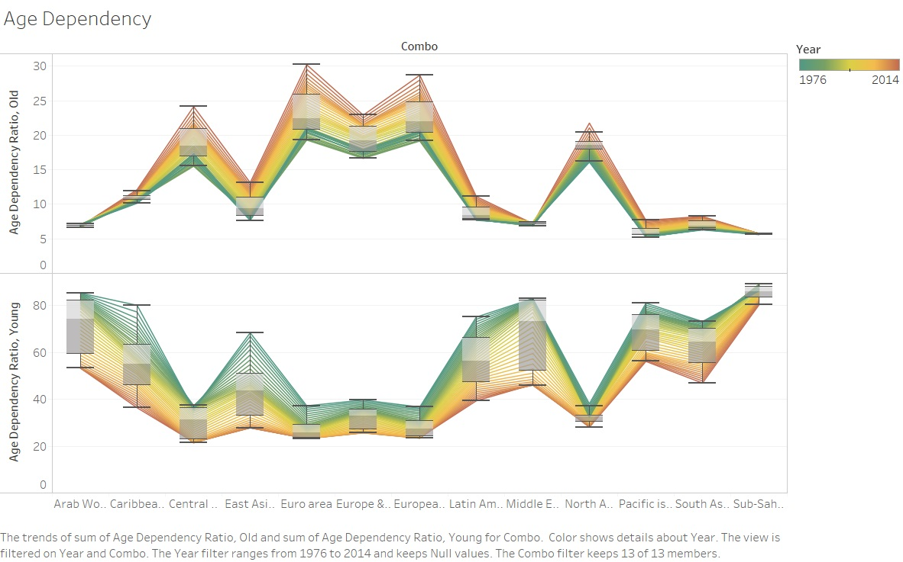
See the Capstone Project
Data Science Immersive EDA Project
Your hometown mayor just created a new data analysis team to give policy advice, and the administration recruited
you via LinkedIn to join it. The mayor wants to start a new initiative to move the needle on one of two separate
issues: high school education outcomes, or drug abuse in the community. This project is focused on exploratory
data analysis (EDA).
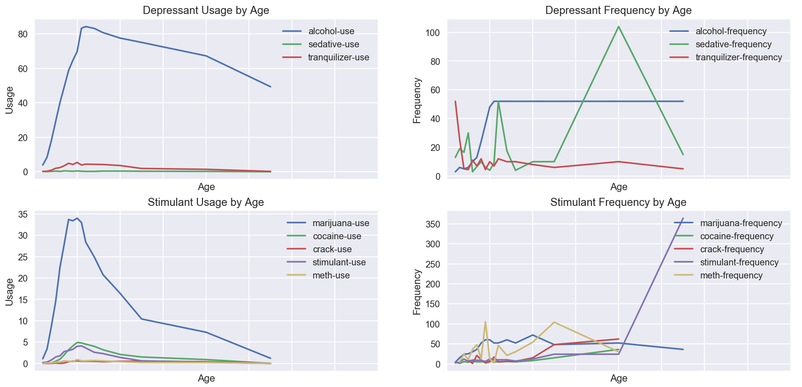
See Project
Data Science Immersive Ames Housing Data Project
Estimating the value of homes from fixed characteristics
Determine any value of changeable property characteristics unexplained by the fixed ones
What property characteristics predict an "abnormal" sale?
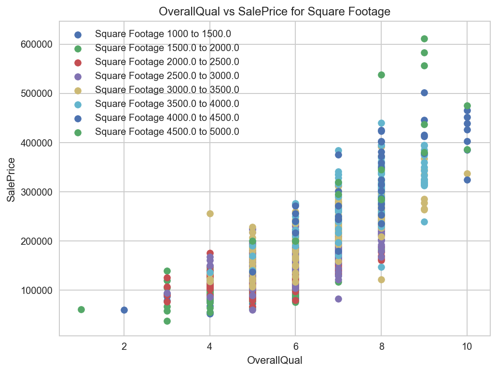
See Project
Data Science Immersive Python Coding Project
The Python Project is designed to be review and practice of python programming competencies.
See Project
WordPress Plugins
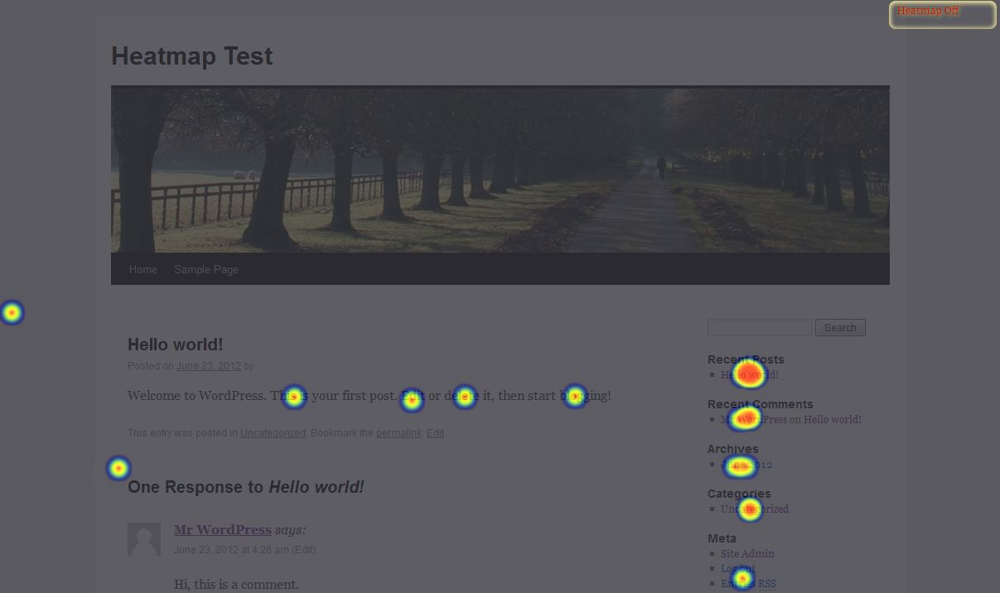
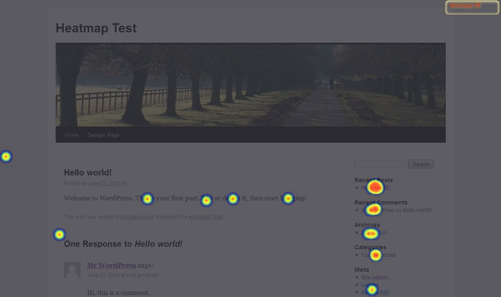
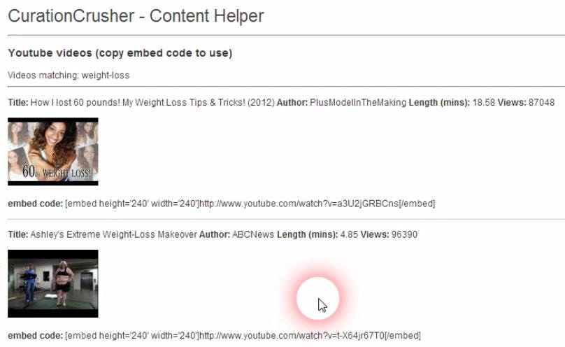
Java Project
R Projects
Data Science Specialisation by Johns Hopkins University on Coursera
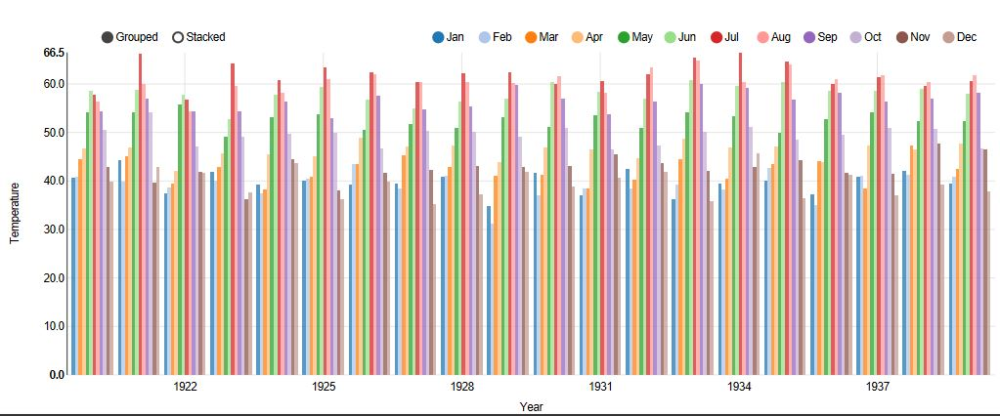
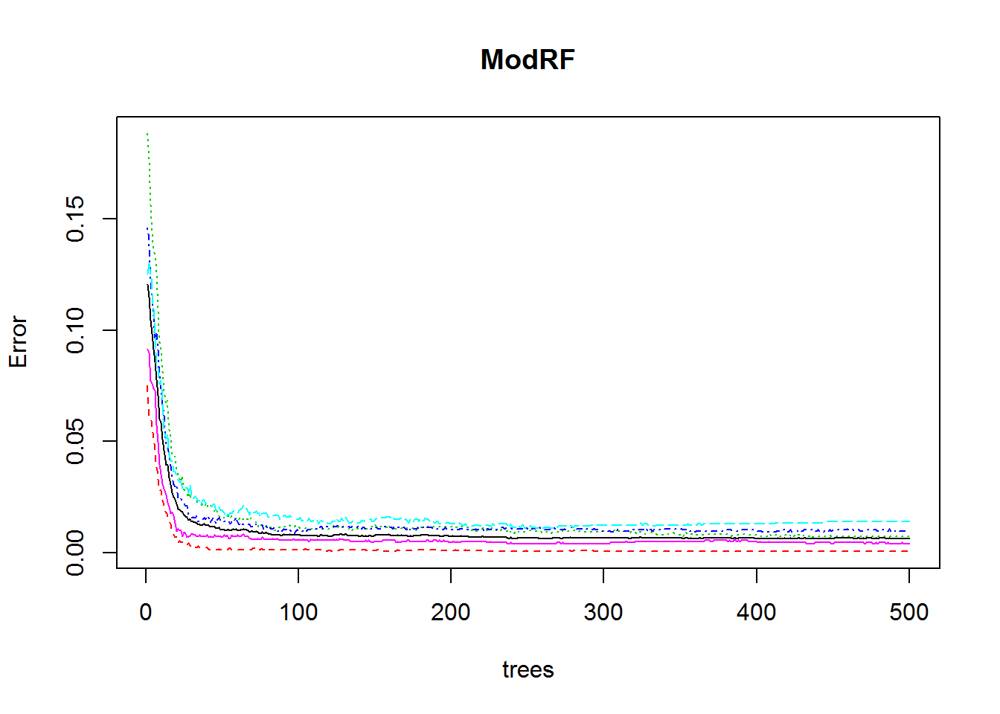
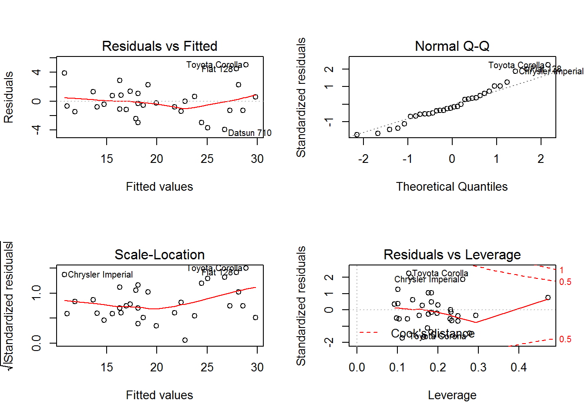
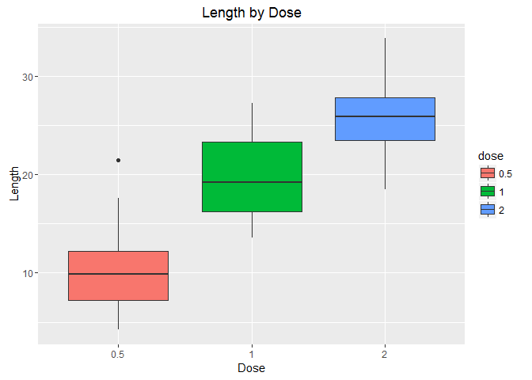
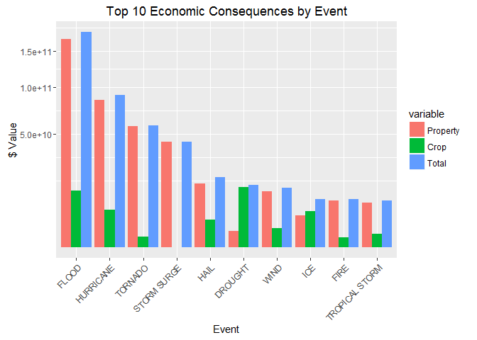

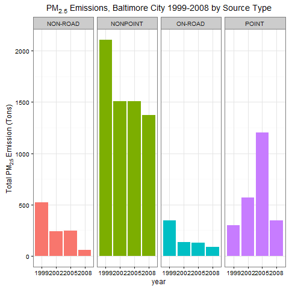